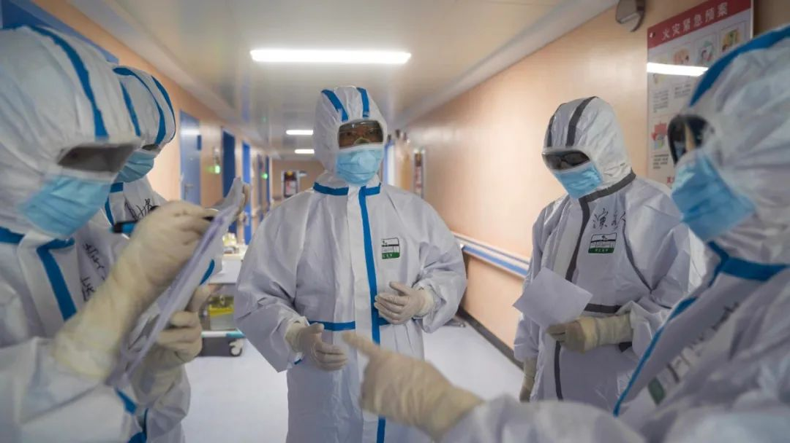
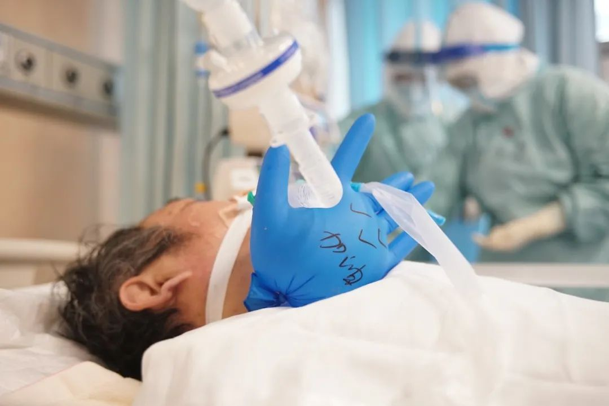
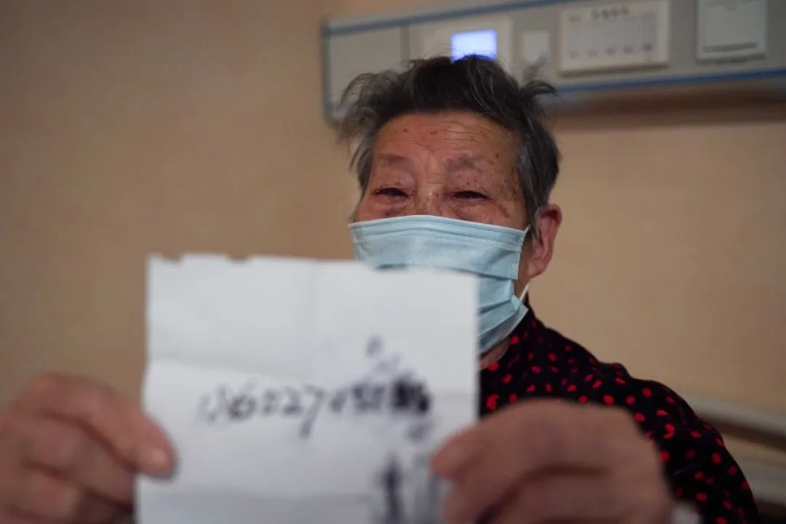
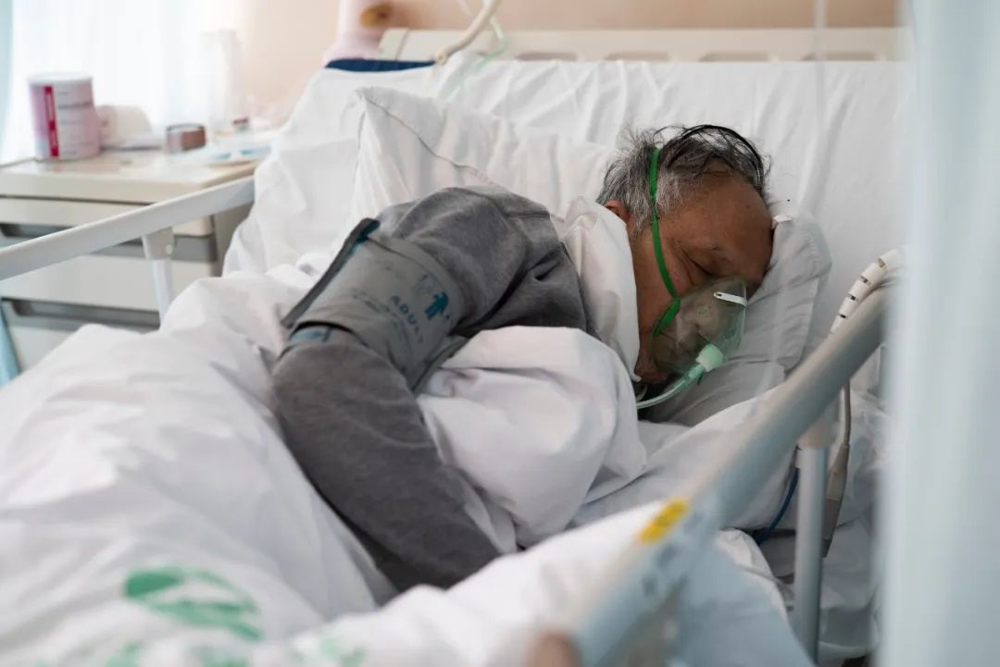
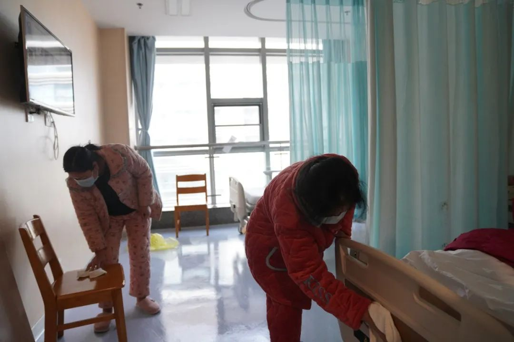
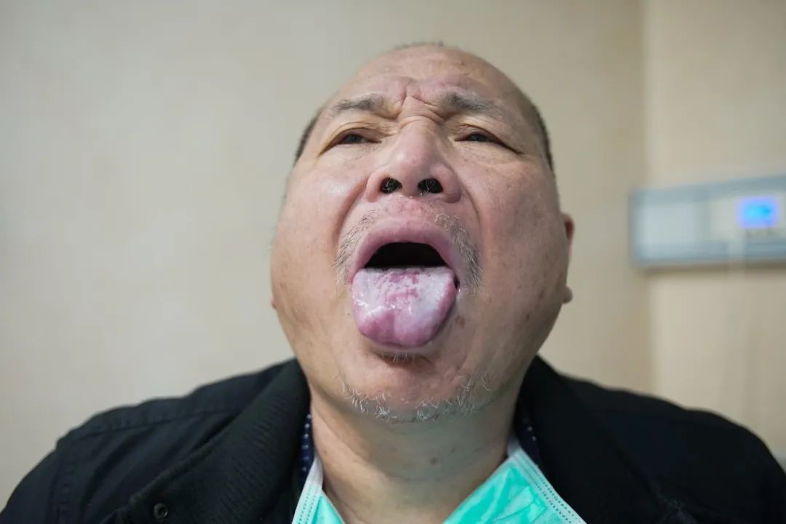
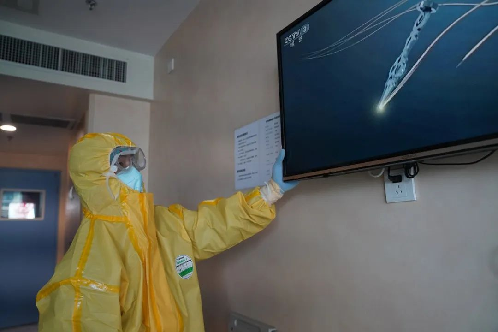
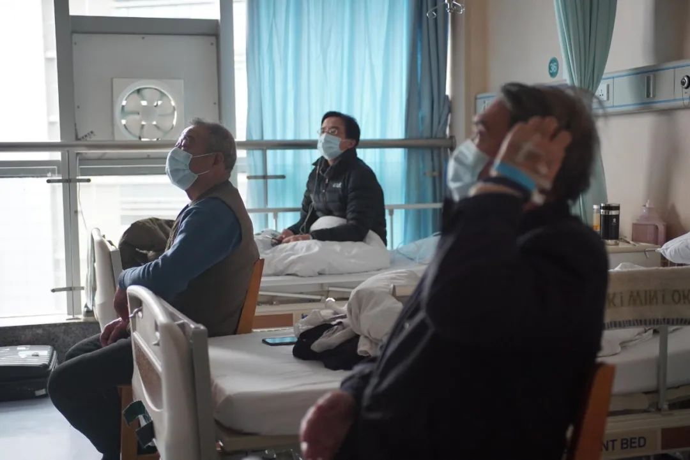
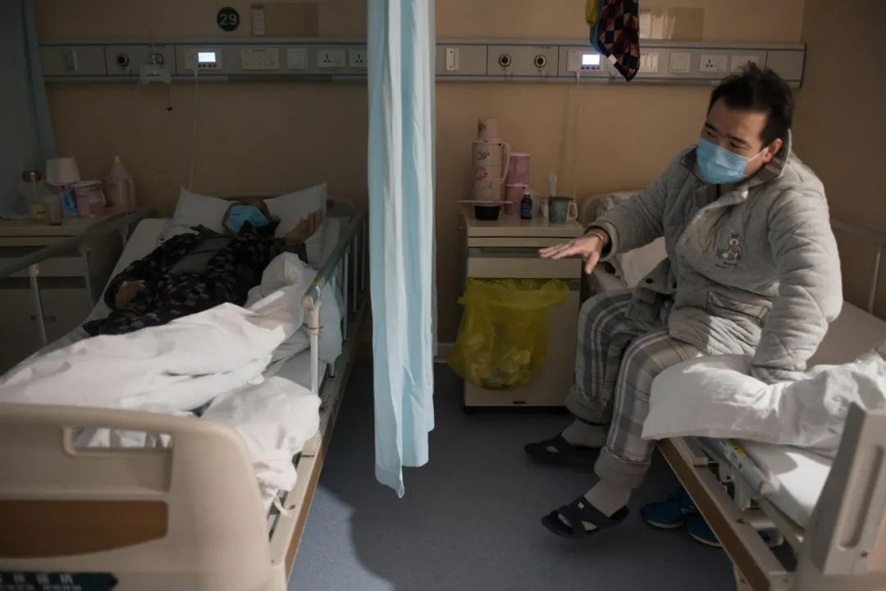
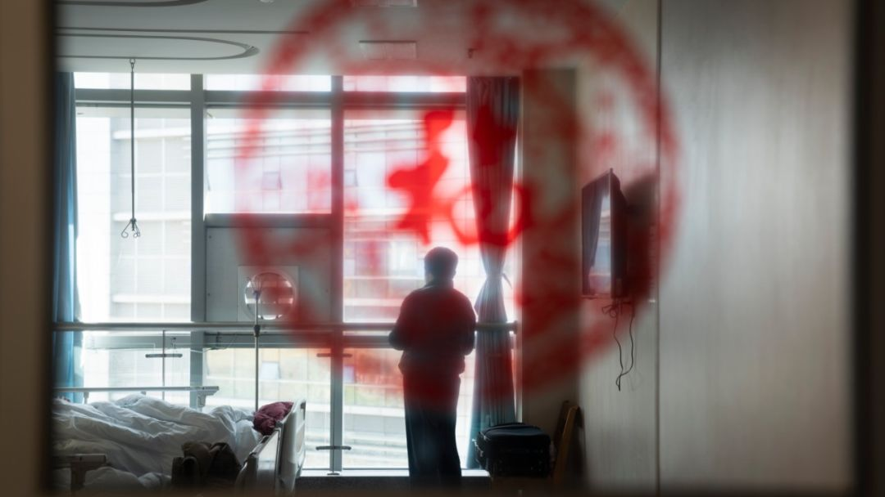

这些医护防护服上的字，第一张就戳心了
原文链接 备份链接 澎湃新闻综合报道 新冠疫情发生以来，为了方便沟通交流，医护人员在背后写上名字，互相打气。 这些防护服上的字，如无声的誓词。 我们虽然看不见你们的脸庞，却从这些字里看到了希望。 “此行是为救治病人，不达目的不撤兵”——她 …

武汉新冠肺炎最为猛烈时，一支来自南京的医疗队进驻武汉同济医院，开始了一场艰难的战役。与此同时，本刊编辑陈玮曦带着摄影机走进重症病房，记录下了医生和病患并肩作战的日日夜夜。
从今天（3 月 9 日）开始，时尚先生将联合腾讯新闻，连续发布系列纪录短片《武汉·重症区六层》，敬请关注。本篇为先导图片故事。

摄影：陈玮曦
图片编辑：辛远
编辑：杜强
本文为《时尚先生 Esquire》与腾讯新闻
独家合作内容，谢绝转载

2 月 11 日，凌晨一点，武汉同济医院光谷院区，病房入口的门把手不安地摇晃着。
门外，44 位新冠肺炎确诊患者正焦急地等着入住；门内，接管光谷院区 E1 区 6 层的医疗队员，正在争分夺秒地做收治病患前最后的准备工作。病房门打开，病患们迫不及待进入，医疗队迎来首批患者。此时距离他们落地武汉，仅仅过去 30 个小时。

接管武汉同济光谷院区 E1 区 6 层的医疗队，由南京鼓楼医院以及六合、高淳分院的医护人员一起组成。在安装完心电监控、呼吸机等一系列准备工作就绪后，医护人员比出 ok 手势，准备开始收治病人。光谷院区有 17 个病区，分别由来自上海、山东、浙江、江苏、广东、福建六个省市的 17 支医疗队管理，共计 850 个床位，全部收治重症和危重症病人。每个病区有 50 张病床，配备 130 个医护人员，其中医生 30 人、护士 100 人。

病房门打开的瞬间，患者们迫不及待地进入。为保证患者安全有序的收治，医护人员一一询问患者身体情况，并安排床位，同时还要不断安抚患者的情绪，维持现场秩序。当晚，在经历一番鏖战后，44 名新冠肺炎确诊患者在 3 小时内全部顺利收治入院。

医护人员来到病房，观察并记录患者的病情。
**

将患者安排妥当，医护人员开始思考和商讨治疗方案。

2 月 22 日凌晨，病区临时转进了一位危重症患者，医护人员每天 6 班轮换、24 小时不间断守在这位病人身边。第二天早班的护士在一只医用手套上写下「加油」两字，垫在病人的气管插管下面，防止管道弯曲、下垂产生堵塞。

每天上午 10 点，专家组讨论诊疗方案。截至 2 月 24 日，院区收治病人共计 59 人，出院 10 人。
医护人员除了要实时关注重症患者的身体情况，他们还要格外关注患者因病情变化而产生的心理波动。焦虑、不安、惶恐、烦躁、低落……这些是重症患者常见的情绪。每一种情绪背后，对应的都是一段辛酸难言的故事。新冠疫情统计数字实时更新，抽象数字背后是无数鲜活生命的个体叙事。

王奶奶 70 多岁，病情不是很重，但非常焦虑，有天甚至跑出病房，对医生大喊「我不治了，我要回家」。一名医疗队联络员也是心理科专家，在负责医务管理和联络的同时，发挥所长，为患者提供专业的心理辅导。
在对王奶奶交谈的过程中，了解到因为匆忙入院，没带手机的她始终没能和家人取得联系。联络员取来纸笔，写下老人儿子的电话号码。后来护士拨通了电话，儿子让王奶奶安心休养。
护士说，老人应该是担心儿子，所以在听到儿子的消息，确认儿子没事后，她也就心安了。2 月 26 日，王奶奶已经顺利康复出院。


一对同时染病的老夫妇同时入院，但因每个病房仅有三个床位，二位老人未能分到同一间，而是分在了相邻的病房。奶奶病情较轻，爷爷的情况却比较严重。为了不让奶奶担心，爷爷始终不愿接奶奶的电话。了解到情况的医护人员主动当起了二位老人沟通的中转站，每天先去看爷爷，告诉爷爷「奶奶特别关心你，等着和你一起出院呢」，再去把爷爷的一些情况适当地转达给奶奶。
一天深夜，爷爷的病情有变化，奶奶竟然敏锐地感觉到了。一位护士提起这对老夫妇时说「在这样的时候，『爱』这个字被放大了」。目前爷爷已经度过了最危险的时期，病情趋于稳定。

一位近 80 来岁的老年患者跑出病房，医护人员上前安抚，将其劝回房间。医护人员不太能听懂他的话，最初以为他只是想回家，后来经过观察，判断老人可能患有阿尔茨海默病和酒精中毒性脑病，意识有障碍，医生对其进行了合适的药物治疗，护士也尽其所能的给予照护。

按要求，病⼈不能互相串门或在楼道随意⾛动，但老人总是趁不注意跑到楼道里来，嘴里念念叨叨，总是像在找些什么。护士曾经问他，「是不是找家门和床」，他说「是的」，扶他到床边休息后，但很快他又走了出来。

周阿姨（右一）入院首日，拖着病体在房间中不断擦拭。在护士长的劝说下才回到床上休息。

在病床上，周阿姨说起自己的经历失声痛哭，泪水浸湿口罩。她和父母三人被感染，丈夫和孩子被隔离。患有帕金森常年瘫痪在床的 77 岁母亲已经于家中去世，81 岁的父亲被收治在同一家医院的另一个病区，由于老人不会使用手机，无法联系。父亲患有糖尿病，并安装了心脏起搏器，周阿姨十分担心父亲的身体状况。护士长解释，在疾病心理学中，她反复擦拭清洁房间是某种逃避机制，以机械重复的行为逃避心理创伤。随后，在护士长的帮助下，周阿姨终于和父亲联系上，才得以安心睡下。

这名患者反复向旁人展示舌苔，他觉得自己舌苔异样，可能是病情恶化的征兆，非常焦虑。医护人员向患者解释这是口腔溃疡，给他安排了药物，并把饮食调整成了半流质。特殊时期，身体上细微的变化，都会引发患者的心理波动。

刚刚入院的患者背后，贴着一张写着「确诊病人，请远离」的纸。该纸条为患者孙女所写，善意提醒旁人远离避免感染。疫情到来，人与人之间都在保持安全距离，但同时也激发了陌生人之间的善意。后来该患者安置妥当后，医护人员便将该纸条揭了下来。

医护人员将病房内的电视特意调到了综艺频道，尽量避免病患接触到疫情相关的新闻而刺激情绪。在治疗阶段，与疫情相关的新闻「隔离」，保持一个相对平稳的情绪，对患者的康复尤为重要。

同病房的病友交流并不多，大多数时间只是一起看电视。

尽管同为病人，但因病情轻重不同，也会担心交叉感染加重病情的可能。因此邻床病人交谈时都会拉上帘子。

病房的玻璃上贴着福字窗花，一名病人站在落地窗前向外望去。
尽早康复出院不仅是患者最大的心愿，也是医护人员最迫切的愿望。正如医护人员在劝说病患时说的：「请和我们一起努力直到疫情结束，我们也想回家，我们也想脱下口罩畅快的呼吸。」但在疫情尚未结束之时，医护人员依旧要日复一日地投入到救治、护理工作中。
同济医院光谷院区，是以收治重症患者为主的院区，在承担紧急繁重的救治任务的同时，医护人员在自我防护上也丝毫不敢疏忽。进入病房前，戴上口罩，扣上护目镜，穿好防护服并将名字写上，成为一天当中最具仪式感的事情。除了姓名，他们往往还会即兴涂鸦，或是心心念念的家乡美食，或是对相隔迢迢的亲人的想念，或是那些雀跃的心愿……在弥漫着疾病、恐慌和死亡气息的病房中，当防护服内的呼吸都变得粗重时，这些笔画里的轻快和乐观显得尤为珍贵。

「周黑鸭」、「盐水鸭」，它们分别是武汉和南京的特色食品，在这里它们有了另一重表意：一座城对另一座城的奔赴驰援，守望相助。

护士邢玲将两个女儿的名字写在胸口，并写道「妈妈爱你们」。自疫情发生后，女儿就一直在爷爷奶奶家，邢玲从大年初三到现在一直都没见到她们。她说大女儿四岁半，懵懵懂懂地知道妈妈是去武汉「打病毒，打怪兽」了，二女儿两岁半，不清楚妈妈去做什么，但是一样很想妈妈。

情人节当天，护士周云的防护服上写着「情人节快乐」「爱你武汉」。周云说她从小便有一个英雄梦，经常梳起辫子想象自己是花木兰。如今驰援武汉，一线抗疫圆了她一直以来的英雄梦。
尽管每天开始工作前，医疗队成员都会利用既有的医疗物资，尽可能地做好防护准备，但每天出入「红区」，与看不见的病毒短兵相接，身处病毒高污染环境中的他们，依然是距离危险最近的人。3 月 6 日，中央指导组成员、国务院副秘书长丁向阳称，湖北省有超过 3000 名医护人员感染新冠肺炎，驰援湖北省的 4 万多名医护人员还没有感染报告。

高感染风险下，医护人员在工作结束后都会用酒精棉签对眼部进行仔细消毒。对感染的恐慌如影随形，只能用尽可能周全的防护和细致的消毒来最大限度降低感染的可能性。

工作结束后，护士用酒精棉签擦拭耳朵进行消毒。

口罩、防护服在医护人员的脸部留下的勒痕。除此之外，穿上防护服后不能轻易喝水、上厕所，也是医护人员要克服的困难。不透气的防护服一穿就是几个小时，一天下来往往汗湿全身。

清晨六点，医疗队员便坐上大巴，从酒店前往 10 公里外的医院。他们都是非常熟识的同事，在大巴车里却交谈不多。不久后，他们将开始新一天高强度的救护工作。

_医疗队员坐大巴车前往医院，车窗外掠过的行道树有着好看的树影，枝头已开始吐露春意。
_
春天已至，但据 2 月 21 日召开的中共中央政治局会议指出，全国疫情发展拐点尚未到来。中国工程院副院长、呼吸与危重症医学专家王辰也在《新闻 1+1》节目上表示，新冠肺炎有可能转成慢性疾病，像流感一样与人类共存。抗击疫情的道路还有很长，但至少，千千万万的一线医护人员，始终在路上。
联合出品：《时尚先生 Esquire》腾讯新闻
鸣谢：南京鼓楼医院 腾讯基金会 腾讯发展研究办公室
医护人员在一线奋战，来自全国各地的爱心也在源源不断抵达。腾讯公益平台上的「战疫天使」公众筹款项目，将为包括南京市鼓楼医院在内的众多前线医护人员提供生活保障。同时，腾讯公益慈善基金会还设立了战疫人物专项基金，致敬为抗击疫情作出特殊贡献的人。
时尚先生也已参与到「战疫行动」当中，致力于挖掘医护故事，传递战疫精神。


C O N T R I B U T O R S
编辑：本本
责任编辑：Neil

先生在场 | 疫情系列报道
疫情之下，每个“普通”故事背后的光辉
__________________


**给我好看！ **
**
原文链接 备份链接 澎湃新闻综合报道 新冠疫情发生以来，为了方便沟通交流，医护人员在背后写上名字，互相打气。 这些防护服上的字，如无声的誓词。 我们虽然看不见你们的脸庞，却从这些字里看到了希望。 “此行是为救治病人，不达目的不撤兵”——她 …
原文链接 备份链接 *************▲*************2月4日，医护人员将患者转运至武汉火神山医院病房。 （新华社记者 肖艺九/图） 全文共7126字，阅读大约需要14分钟。 火神山医院从开工到交付使用，只用了大 …
原文链接 备份链接 澎湃新闻特约撰稿 张小莲 记者 朱莹 温潇潇 实习生 刘昱秀 由张学友演唱，周杰伦谱曲，方文山填词的歌曲《等风雨经过》(02:54) 距离武汉封城，已经过去了40天。 这40天，有人离世，有人痊愈，有人还在忍受病痛。有 …
原文链接 备份链接 澎湃新闻记者 段彦超 实习生 宋文慧 张亚如还记得一个月前刚到武汉的时候，队员们在酒店里培训了两天，练习穿脱防护服。 虽然各家医院都带来了一些防护物资，但大家都舍不得把防护服浪费在练习上，一套防护服一副手套，二十多名医 …
原文链接 备份链接 文/六筒 李岩半年前刚去过武汉，和家人去旅游，主要想看看黄鹤楼。那还是夏天，热气蒸得人头上冒烟。高温挡不住蜂拥的游客，摩肩接踵，拥塞的车辆在大道上艰难挪动。“真是个大都市”，她想。 李岩是河北医科大学第二医院呼吸与危重 …